Dra. Claudia Cartagena
BroncopulmonarAtención especializada en salud respiratoria y seguimiento clínico de pacientes.
Equipo médico, profesionales del área de salud y equipo especializado en estudios clínicos de CENRESIN.
Profesionales dedicados a la atención clínica, evaluación respiratoria, cardiología, nutrición y apoyo integral de pacientes.
Atención especializada en salud respiratoria y seguimiento clínico de pacientes.

Evaluación respiratoria y acompañamiento médico en patologías pulmonares.

Atención clínica integral, controles y seguimiento médico de pacientes adultos.

Atención médica infantil, orientación familiar y seguimiento preventivo.

Evaluación cardiológica y apoyo diagnóstico para el cuidado cardiovascular.

Evaluación nutricional, composición corporal y acompañamiento de hábitos saludables.
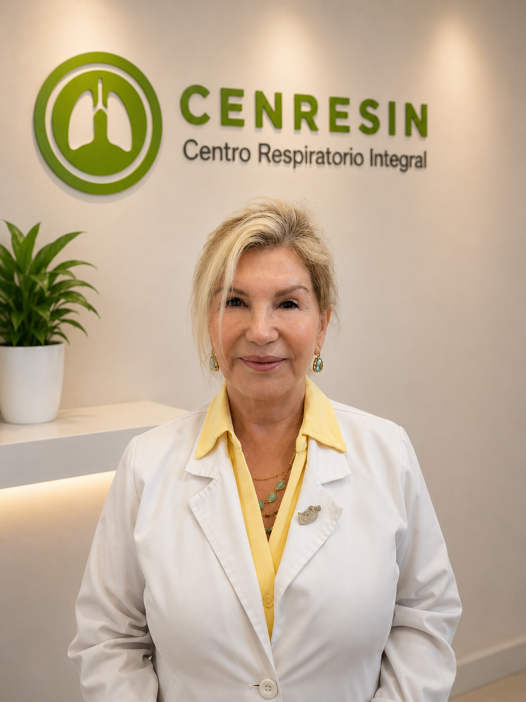
Apoyo clínico e institucional vinculado a la trayectoria histórica de CENRESIN.
Equipo especializado en la ejecución, coordinación, seguimiento y soporte de estudios clínicos respiratorios.
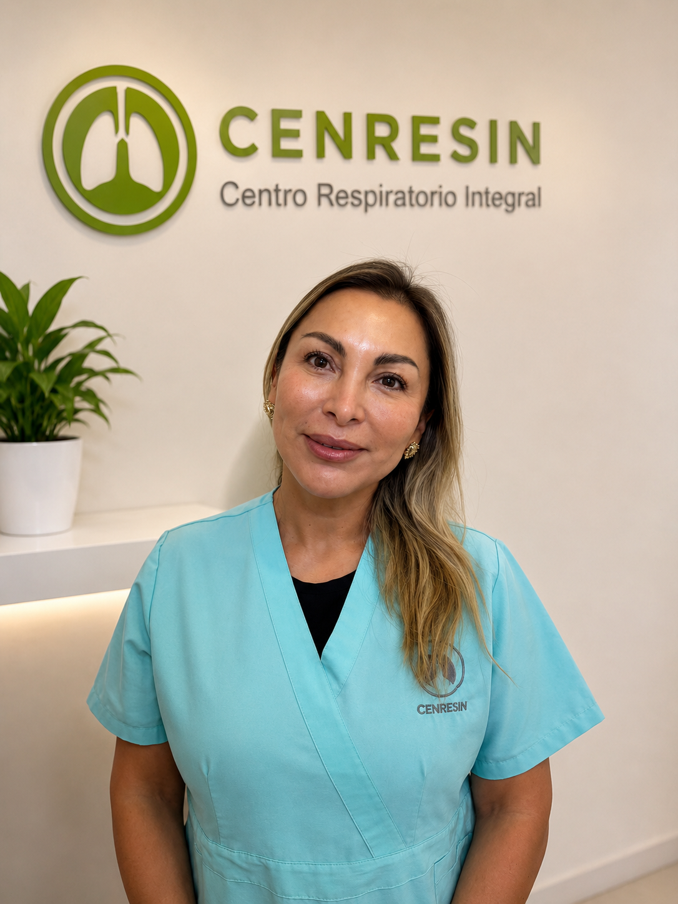
Coordinación transversal de protocolos, equipos y procesos de investigación.
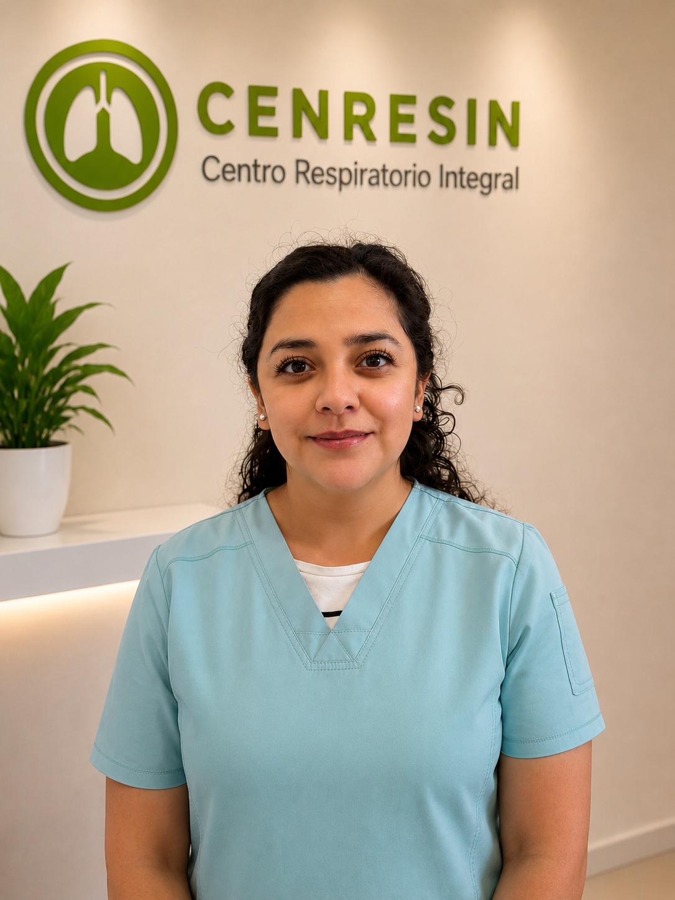
Seguimiento operativo y coordinación de proyectos de investigación clínica.
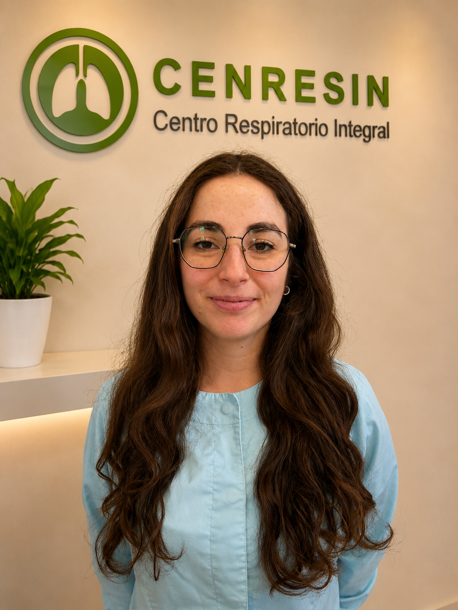
Gestión de visitas, acompañamiento de participantes y apoyo en protocolos.
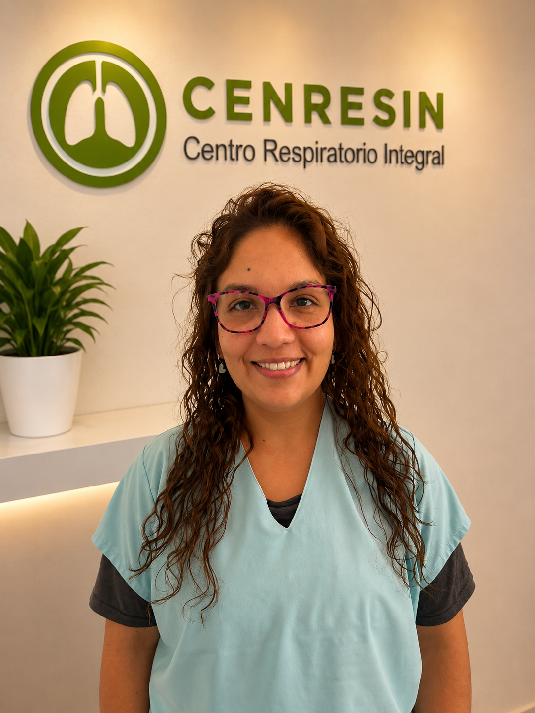
Apoyo en coordinación, seguimiento documental y procesos internos de estudios.
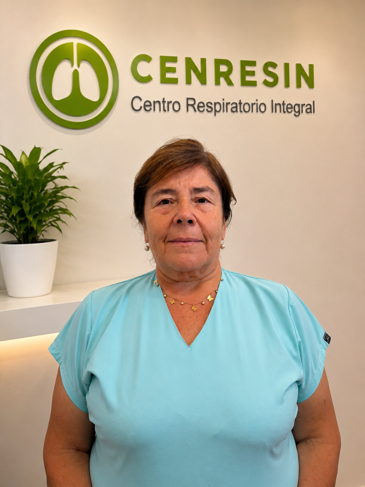
Apoyo sanitario en procedimientos y acompañamiento de participantes.
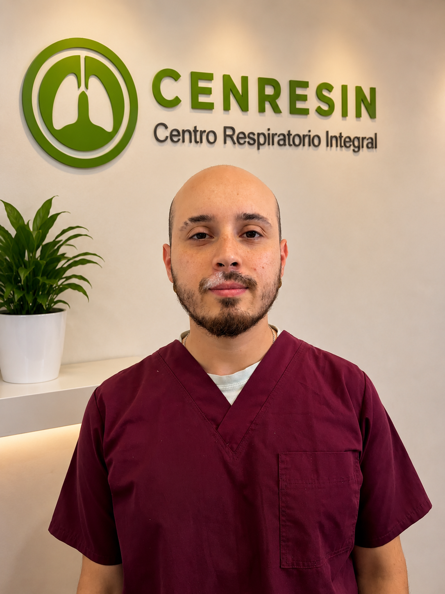
Apoyo operativo y sanitario en investigación clínica respiratoria.
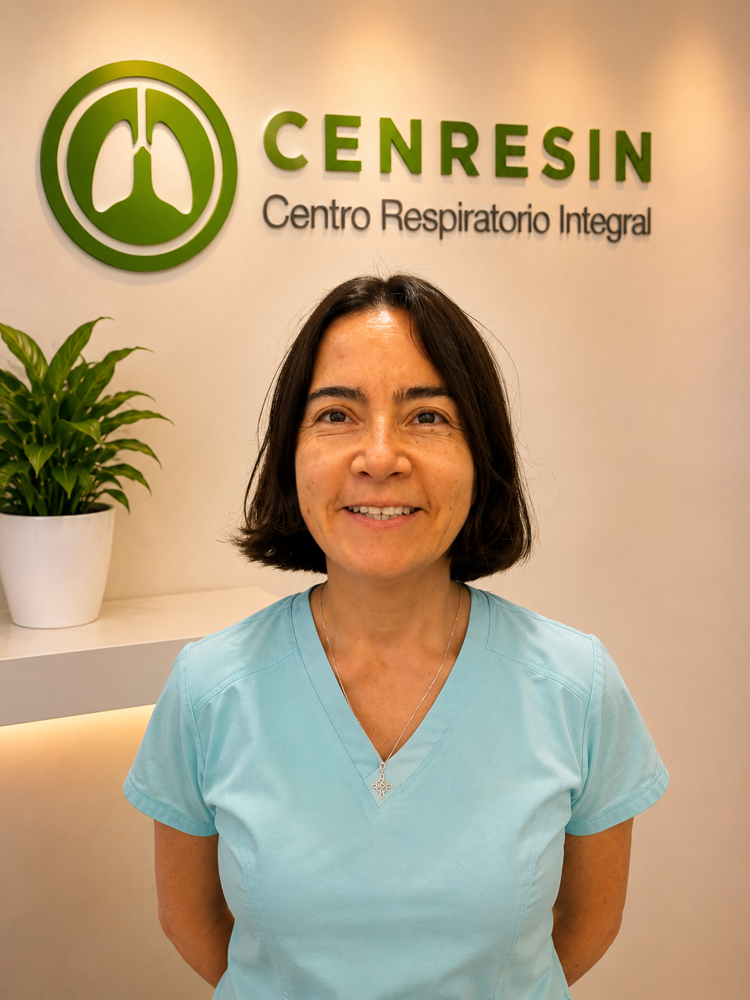
Gestión de datos, muestras, documentación y apoyo regulatorio.
Instalaciones diseñadas para brindar una atención cercana, cómoda y profesional.
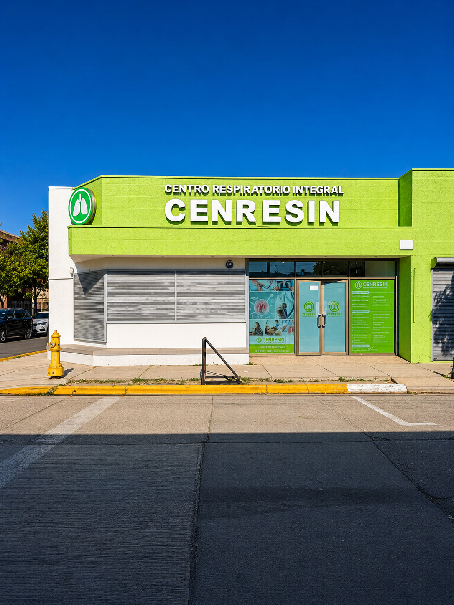
Fachada principal de CENRESIN en Quillota.
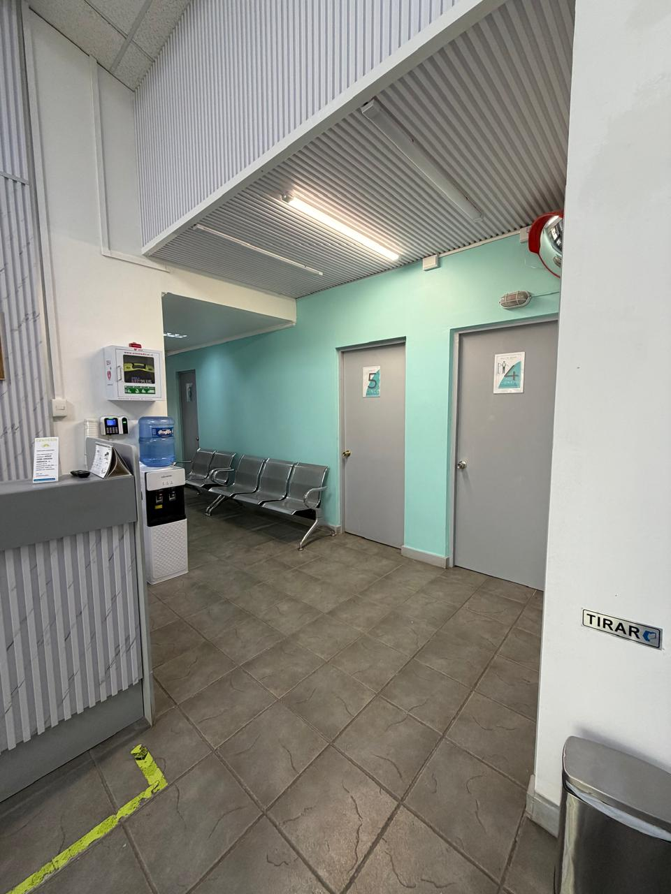
Espacio de orientación, coordinación y atención inicial de pacientes.
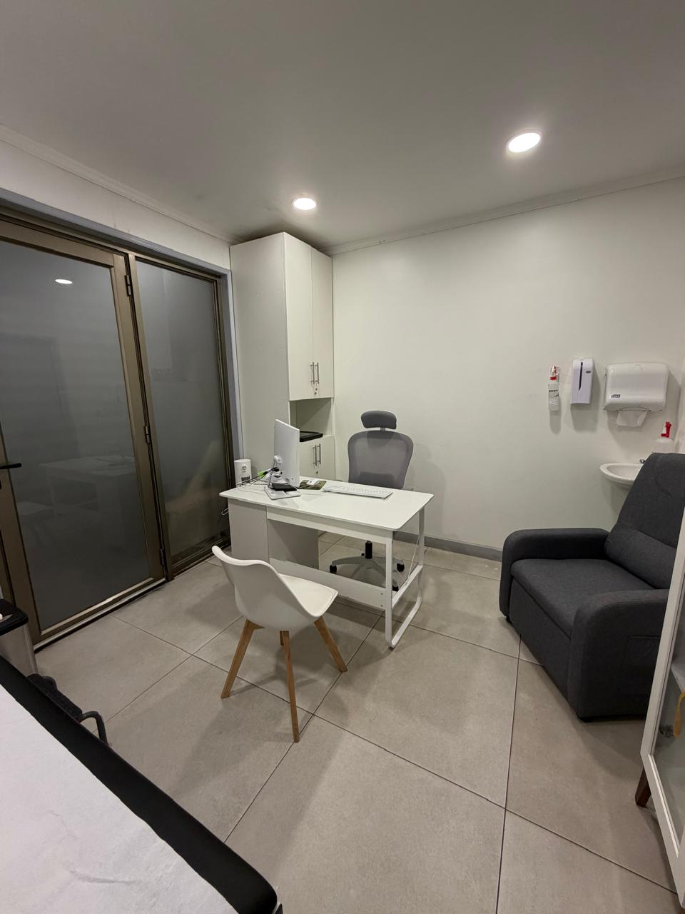
Atención médica en un entorno cómodo, privado y profesional.
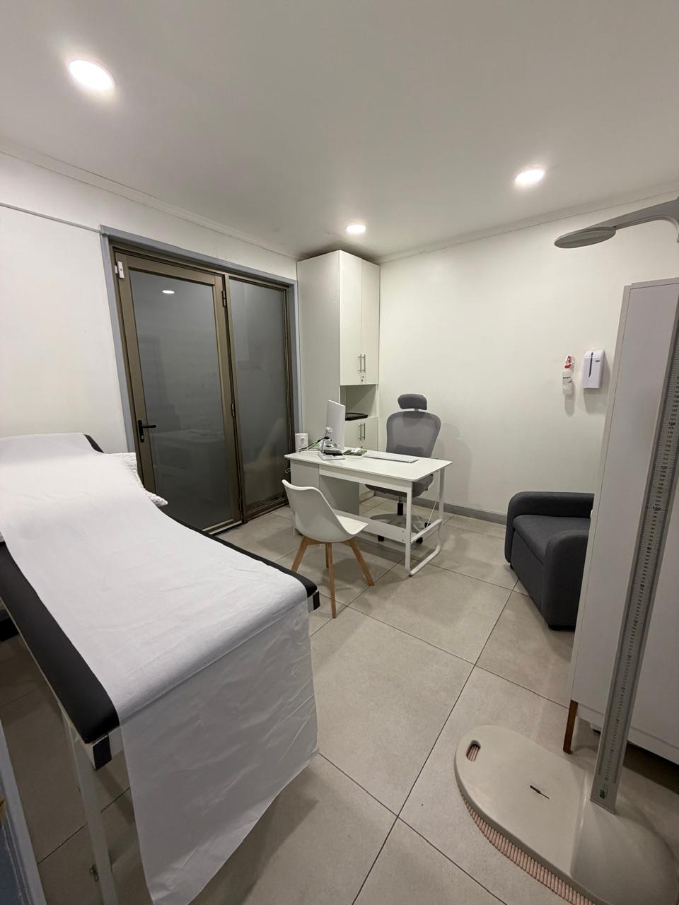
Espacio preparado para evaluación clínica y seguimiento de pacientes.
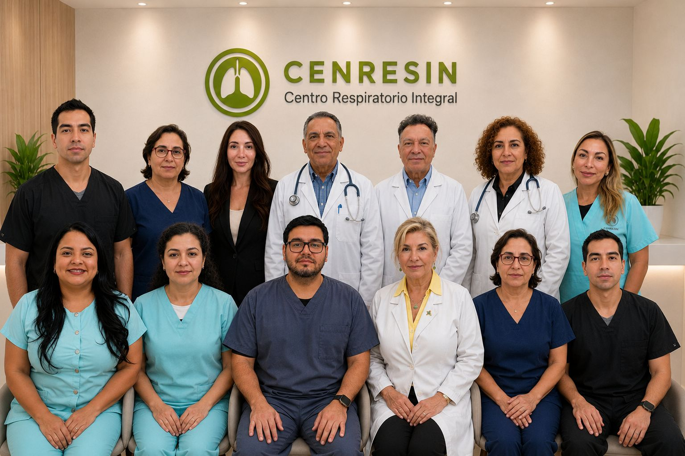
Personas que conectan atención médica, investigación y gestión.